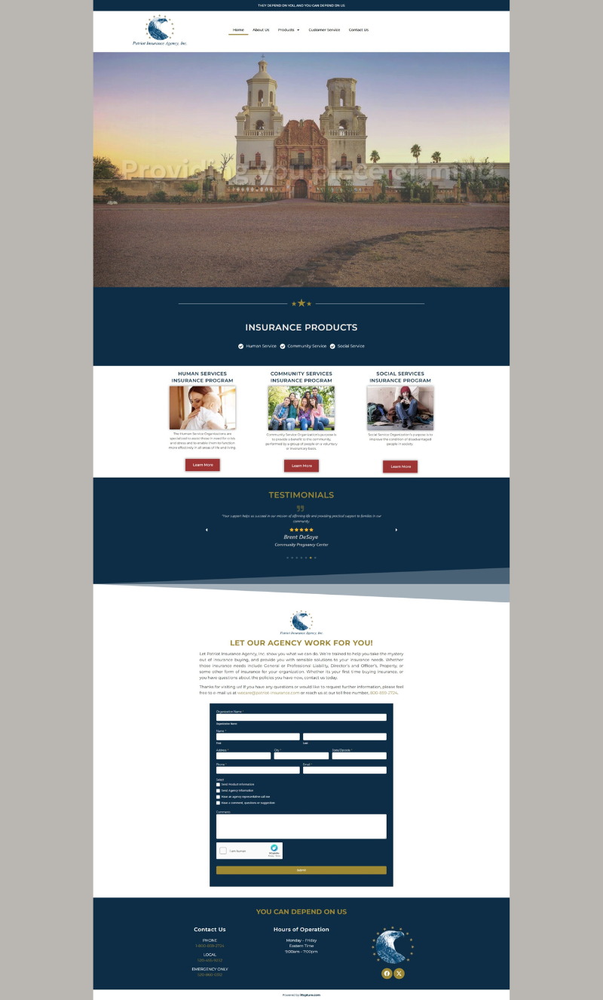
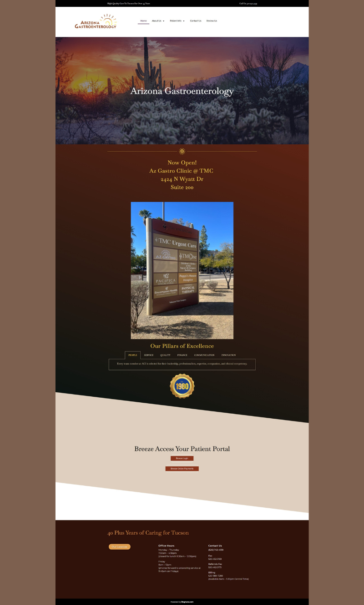

My Featured Projects

Grace and Goods
Modern e-commerce website with product showcase and smooth UX.

Dr. Brian Mitchell & Associates
Professional and approachable design for a dental practice.

Westerner Products
Clean business design highlighting services and customer trust.

Patriots Insurance
Clear, informative layout for clients comparing coverage options.

NIFLA Leadership Summit
Nonprofit advocacy website built for clarity and engagement.

Water Walkers
Community outreach and faith-based design focused on impact.

AZ Gastroenterology
Clean and professional medical layout with strong UX.

Flutter
Modern creative site emphasizing design and user flow.